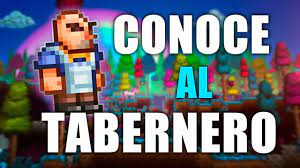

El Tabernero es un NPC del modo normal que aparece desmayado en el mundo solamente después de derrotar al Cerebro de Cthulhu / Devoramundos. Hablar con él cuando está desmayado hará que se despierte y que se mude a la primera casa libre.
Los objetos que vende están basados en el mundo de Dungeon Defenders II. Utiliza una moneda única, llamada Medalla del Defensor, y no es posible comprar sus objetos con monedas. Los únicos objetos que venden a cambio de monedas son el cristal eternia, el Stand de cristal eternia y la cerveza.
Si te acercas a él con una cerveza puedes hacer un brindis, para hacerlo basta con sostener una cerveza en la mano y chocarla junto con la del tabernero.
El tabernero |
|
 |
|
Estadisticas |
|
Tipo |
NPC |
Salud |
250 |
Arma |
Cerveza |
Defensa |
15 |
Especialidad |
Vender objetos relacionados con Dungeon Defenders II |
Bestiario |
|
Descripcion |
El tabernero una vez administraba un bar en otro universo. Él esta aquí para ayudar a detener el ejército del antiguo de conquistar este mundo.
|
Bioma preferido |
La bendicion |
Deja |
|
Lanzador de cerveza |
16.7% |
IDs internas |
|
ID de bestiario |
579 |
ID de NPC |
12 |
Cuando despierta:
Cuando no tiene casa:
Cuando es de noche:
En Luna de Sangre:
Durante el Modo difícil:
Después de matar al Señor de la Luna:
Cuando clickeas en Cristal eternia:
| Objeto | Precio | Disponibilidad |
|---|---|---|
| Cerveza | 1 |
Siempre disponible |
| Cristal eternia | 25 4 |
Antes de matar un jefe mecánico/ Después de matar un jefe mécanico/ Después de matar al Gólem |
| Stand de cristal eternia | 1 |
Siempre disponible |
| Forja del Defensor | 75 |
Siempre disponible |
| Varita de aura de rayo | 5 |
Siempre disponible |
| Bastón de aura de rayo | 15 |
Después de matar a un jefe mecánico |
| Báculo de aura de rayo | 60 |
Después de matar al Gólem |
| Varita de Explosión de llamas | 5 |
Siempre disponible |
| Bastón de Explosión de llamas | 15 |
Después de matar a un jefe mecánico |
| Báculo de Explosión de llamas | 60 |
Después de matar al Gólem |
| Varita de trampa explosiva | 5 |
Siempre disponible |
| Bastón de trampa explosiva | 15 |
Después de matar a un jefe mecánico |
| Báculo de trampa explosiva | 60 |
Después de matar al Gólem |
| Varita de balista | 5 |
Siempre disponible |
| Bastón de balista | 15 |
Después de matar a un jefe mecánico |
| Báculo de balista | 60 |
Después de matar al Gólem |
| Sombrero de aprendiz | 15 |
Después de matar a algún Jefe mecánico |
| Vestido de aprendiz | 15 |
Después de matar a algún Jefe mecánico |
| Pantalones de aprendiz | 15 |
Después de matar a algún Jefe mecánico |
| Gran casco de escudero | 15 |
Después de matar a algún Jefe mecánico |
| Placa de escudero | 15 |
Después de matar a algún Jefe mecánico |
| Grebas de escudero | 15 |
Después de matar a algún Jefe mecánico |
| Peluca de cazadora | 15 |
Después de matar a algún Jefe mecánico |
| Jubón de cazadora | 15 |
Después de matar a algún Jefe mecánico |
| Pantalones de cazadora | 15 |
Después de matar a algún Jefe mecánico |
| Gorra de calvo y cejas densas de monje | 15 |
Después de matar a algún Jefe mecánico |
| Camisa de monje | 15 |
Después de matar a algún Jefe mecánico |
| Pantalones de monje | 15 |
Después de matar a algún Jefe mecánico |
| Sombrero del Artista Oscuro | 50 |
Después de matar al Gólem |
| Vestido del Artista Oscuro | 50 |
Después de matar al Gólem |
| Perneras del Artista Oscuro | 50 |
Después de matar al Gólem |
| Casco de infiltrador shinobi | 50 |
Después de matar al Gólem |
| Torso de infiltrador shinobi | 50 |
Después de matar al Gólem |
| Pantalones de infiltrador shinobi | 50 |
Después de matar al Gólem |
| Caperuza roja | 50 |
Después de matar al Gólem |
| Vestido rojo | 50 |
Después de matar al Gólem |
| Perneras rojas | 50 |
Después de matar al Gólem |
| Casco de Caballero del Valhalla | 50 |
Después de matar al Gólem |
| Coraza de Caballero del Valhalla | 50 |
Después de matar al Gólem |
| Grebas del Caballero del Valhalla | 50 |
Después de matar al Gólem |